PROTEINS
Introduction to Proteins
Proteins are nitrogenous organic compounds of high molecular weight which play a vital or prime role in living organisms. They are made up of 20 standard $\alpha$-amino acids.
Functions of Proteins
- Body building: Serve as body building units (e.g. muscle proteins).
- Support and protection: Provide support and protection to various tissues (e.g. collagen and keratin).
- Catalysis: All chemical reactions in the body are catalyzed by proteinaceous enzymes (e.g. trypsin).
- Transport: Transport various molecules and ions from one organ to the other (e.g. hemoglobin, serum albumin).
- Storage: Store and provide nutrients (e.g. milk casein, ovalbumin).
- Defense: Defend the body from harmful foreign organisms (e.g. immunoglobulins, fibrinogen).
- Regulation: Help to regulate cellular or physiological activity (e.g. hormones, viz. insulin, GH).
Amino Acids
Amino acids are the building blocks of proteins. Among the thousands of amino acids available in nature, proteins contain only 20 different kinds of amino acids, all of them are L-alpha-amino acids.
The general formulae for an amino acid can be written as R-CH-NH$_2$-COOH. Depending upon the ‘R’ group present in the amino acid it is named accordingly.
Classification of Amino Acids
I. Depending upon the charge
Amino acids can be broadly classified into three major groups:
-
1
Neutral amino acids: Those amino acids that do not contain any charge on the ‘R’ group. They are further classified into:
- Aliphatic: 'R' group contains a chain of carbon atoms—Gly, Ala, Ser, Thr, Val, Leu, Ile, Asn, Gln.
- Aromatic: 'R' group has a benzene ring—Phe, Tyr, Trp.
- Heterocyclic: 'R' group has a heterocyclic ring—Pro, His.
- Sulphur containing: Contain a sulphur atom—Cys, Met.
- 2 Acidic amino acids: Contain a negative charge or an acidic group—Asp, Glu.
- 3 Basic amino acids: Contain a positive charge or a basic group—Arg, Lys and His.
II. Depending upon solubility in water
- Hydrophobic amino acids: Insoluble in water—Ala, Val, Leu, Ile, Pro, Met, Phe, Trp.
- Hydrophilic amino acids: Soluble in water—Gly, Ser, Thr, Cys, Tyr, Asp, Asn, Glu, Gln, Lys, Arg, His.
III. Depending upon nutritional requirements
Essential Amino Acids
These cannot be synthesized by the human body and must be taken through diet. There are 10 essential amino acids (Arginine and Histidine are semi-essential).
- M - Methionine
- A - Arginine
- T - Threonine
- T - Tryptophan
- V - Valine
- I - Isoleucine
- L - Leucine
- P - Phenylalanine
- H - Histidine
- Ly - Lysine
Non-essential amino acids: Synthesized in the human body. Includes Gly, Ala, Ser, Pro, Tyr, Cys, Asp, Asn, Glu, Gln.
Reactions of Amino Acids
Physical Characters
1. Zwitter ions
Amino acids have an acidic group (-COOH, proton donor) and a basic group (-NH$_2$, proton acceptor). They act as amphoteric molecules. In solution, they exist as zwitter ions having both anions and cations.
2. Isoelectric pH $(\mathrm{pH}^{\mathrm{I}})$
The pH at which the positive charge on the amino acid is equal to the negative charges. The net charge is zero, and it does not move in an electric field. At $\mathrm{pH}^{\mathrm{I}}$ all molecules exist in zwitter ion form.
Chemical Properties
1. Reactions due to amino group
-
(a) Ninhydrin test: Detects amino acids. Heating with ninhydrin forms a purple blue coloured compound (Ruhemann's purple).
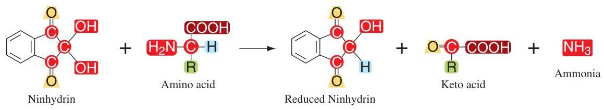 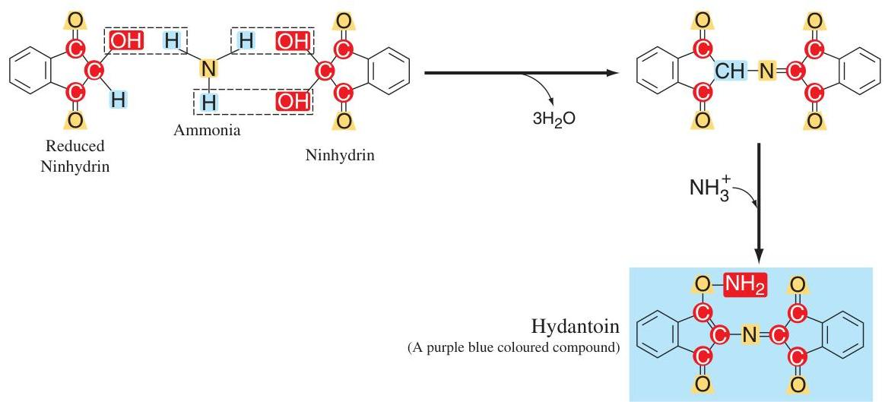
- (b) Reaction with nitrous acid: Used to measure amino acids based on nitrogen released. 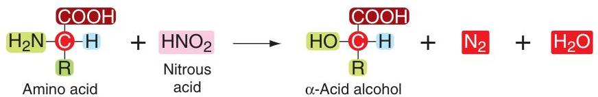
- (c) Reaction with carbonyl compounds (RCHO): Forms a Schiff's base. 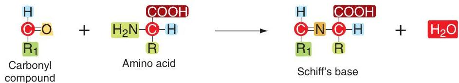
- (d) Reaction with Sanger's reagent: 1-fluoro-2, 4-dinitrobenzene forms a yellow complex. Used to detect N-terminal amino acid. 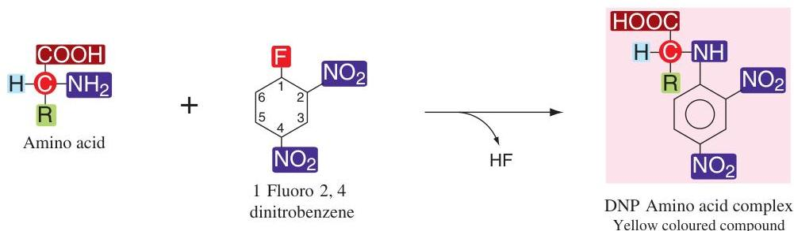
- (e) Edmann's reaction: Phenyl isothiocyanate forms a purple coloured derivative. Used to detect N-terminal amino acid. 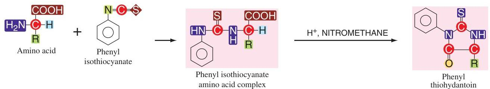
- (f) Reaction with dansyl chloride: 1-dimethyl-amino-naphthalene-5-sulphonyl chloride forms a fluorescent derivative of N-terminal amino acid. 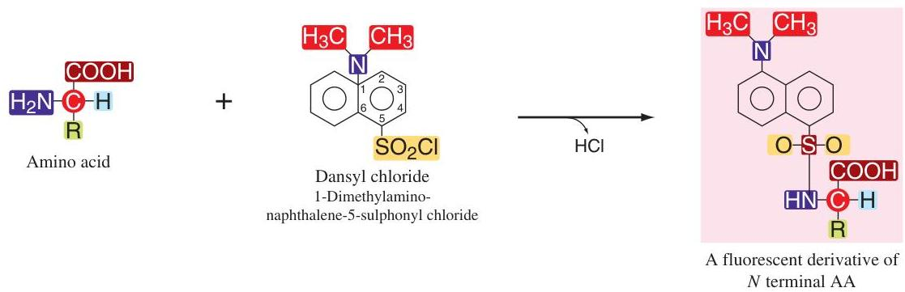
- (g) Condensation to diketopiperazine: Two amino acids react to form a diketopiperazine. 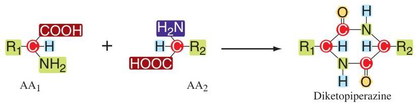
2. Reactions due to carboxylic group
- (a) Reaction with hydrazine: Used to detect C-terminal amino acid. 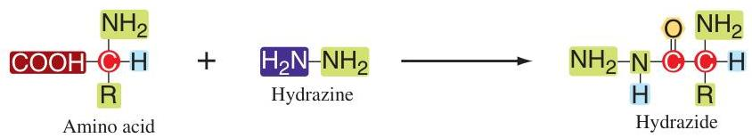
3. Reaction due to both amino and carboxylic group
Peptide bond: The amino group of one amino acid reacts with the carboxylic group of another amino acid to form a peptide bond.
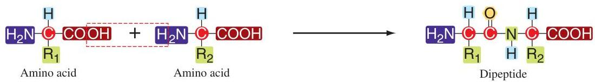Peptides and Protein Structure
Polypeptides
A chain made up of two or more amino acids, linked by a peptide bond is known as a polypeptide. The peptide group has a double bond character and is rigid.
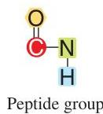Difference between peptide and protein:
- Peptide: Less than 50 amino acids or MW < 5000 Daltons. Non-immunogenic.
- Protein: More than 50 amino acids or MW > 5000 Daltons. Immunogenic.
N-terminal and C-terminal:
N-terminal: The end with the free amino group (written on the left).
C-terminal: The end with the free carboxylic group (written on the right).
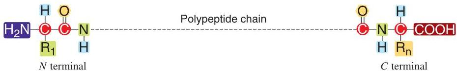Physiological Peptides
- Glutathione: Tripeptide (Glu-Cys-Gly). Antioxidant in RBC.
- Bradykinin & Kallidin: 9 and 10 amino acids. Vasodepressors.
- Other examples: Insulin, Glucagon, Oxytocin.
Levels of Protein Structure
1. Primary Structure
Refers to the total number of amino acids and their sequence. The sequence determines the biological role. Example: Normal HbA vs Sickle cell HbS (Valine replaces Glutamic acid at 6th position of beta chain).
2. Secondary Structure
Twisting of the polypeptide chain into a helical form.
- Alpha ($\alpha$) helix: Right-handed helix. 3.6 amino acids per turn. Intra-chain hydrogen bonding. Found in keratin. 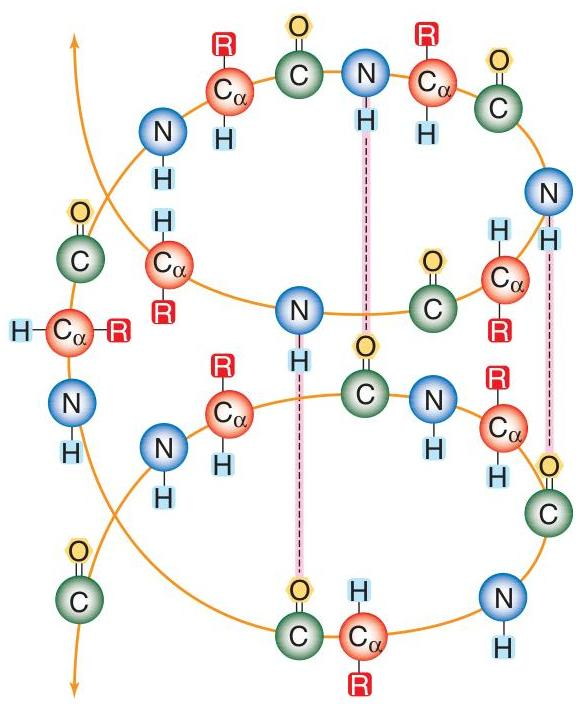
- Beta ($\beta$) pleated sheet: Zig-zag chains side by side. Inter-chain hydrogen bonding.
- Reverse turn: Folds back on itself.
3. Tertiary Structure
Folding of the helical polypeptide into spherical, globular, or ellipsoidal conformation. Essential for biological activity (enzymes, immunoglobulins).
Maintained by:
- Hydrogen bonds
- Ionic interactions
- Disulphide bonds (between cysteine residues)
- Hydrophobic interactions
4. Quaternary Structure
Arrangement of polypeptides in oligomeric proteins (proteins with 2 or more chains). Held by hydrogen bonds, ionic bonds, or Van der Waals forces.
Example: Hemoglobin
Made of 4 polypeptide chains: 2 $\alpha$ chains and 2 $\beta$ chains. $\alpha$ chains have 141 amino acids, $\beta$ chains have 146. Structure creates a cavity for 2,3-DPG binding.

Properties and Classification
Properties of Proteins
- 1Denaturation: Unfolding of native conformation. Caused by heat, acids, alkalies, alcohol.
- 2Coagulation: Formation of insoluble aggregates by heat denaturation (e.g. albumin).
- 3Isoelectric pH ($\mathrm{pH}^{\mathrm{I}}$): pH where net charge is zero. Proteins are least soluble and precipitate (e.g. casein at pH 4.5).
- 4Molecular Weights: Approx MW = number of amino acids $\times$ 110. Range: 5000 to $10^9$ Daltons.
Classification of Proteins
A. Based on Solubility
- Fibrous proteins: Insoluble in water. Structural/protective (Collagen, Keratin).
- Globular proteins: Soluble in water. Functional (Enzymes, Hemoglobin).
B. Based on Structural Complexity
1. Simple Proteins (Amino acids only)
| Albumins | Water soluble, heat coagulable (Serum albumin, Egg albumin). |
| Globulins | Insoluble in water, soluble in dilute salt solutions (Serum globulin). |
| Glutelins | Soluble in dilute acids/alkalies (Glutelin of wheat). |
| Prolamines | Soluble in 70% alcohol (Gliadin). |
| Histones | Basic, water soluble (In nucleus). |
| Protamines | Basic, water soluble (In sperm). |
| Globins | Water soluble, non-heat coagulable (Hemoglobin). |
| Albuminoids | Insoluble (Keratin). |
2. Conjugated Proteins (Protein + Prosthetic group)
- Chromoproteins: Coloured prosthetic group (Hemoglobin).
- Nucleoproteins: Bound to nucleic acids (Chromatin).
- Glycoproteins: Bound to carbohydrates (Mucin).
- Phosphoproteins: Bound to phosphoric acid (Casein).
- Lipoproteins: Bound to lipids (LDL, HDL).
- Metalloproteins: Contain metal ions (Hemoglobin-Fe, Ceruloplasmin-Cu).
3. Derived Proteins
Produced from partial hydrolysis of proteins.
Proteins $\rightarrow$ Proteoses $\rightarrow$ Peptones $\rightarrow$ Peptides $\rightarrow$ Amino acids